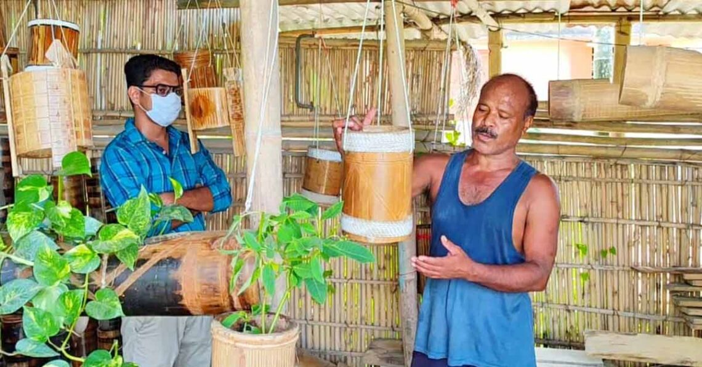

Embracing Traditional Crafts: The Journey of Artisans
Published on September 15, 2024

Discover the incredible stories behind our artisans. From their humble beginnings to becoming masters of their craft, each artisan has a unique journey worth celebrating. Learn how their skills have been passed down through generations and how they continue to adapt in today's market.
Read More
The Art of Handwoven Sarees
Published on August 30, 2024
Handwoven sarees are not just garments; they are a canvas of art. Explore the intricate techniques and vibrant colors that make each saree unique. Join us in understanding the labor of love that goes into weaving these traditional pieces.
Read More
Pottery: A Blend of Tradition and Innovation
Published on August 15, 2024
Pottery has been a cornerstone of many cultures for centuries. In this post, we delve into the fascinating world of pottery, showcasing the techniques that have evolved while still respecting the traditions of the past.
Read More